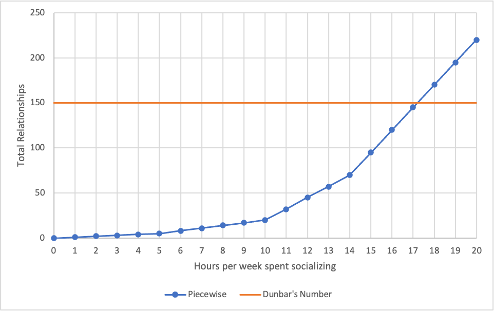

In his 1992 paper, Neocortex size as a constraint on group size in primates, Dunbar argues there is a limit of group size (read: social contacts) one can have—limited by their mental processing power. With this Dunbar's number of 150 was born, stating there is "suggested cognitive limit to the number of people with whom one can maintain stable social relationships—relationships in which an individual knows who each person is and how each person relates to every other person". In short, you can only have so many friendships before you aren't able to maintain all of them.
For those curious, 150 was calculated via the following regression equation:
\[\log_{10}(N) = 0.093 + 3.389 \log_{10}(C_{R, homo})\]Where \(N\) is the mean group size and \(C_{R}\) is the neocortex ratio of homo (humans). Solving for \(N\) and substituting \(C_{R} = 4.1\) (last entry of Table 1):
\[\begin{align*} N &= 10^{0.0.93} C_{R, homo}^{3.39} \\ &= 1.24 C_{R, homo}^{3.39} \\\ &= 1.24 (4.1)^{3.39} \\\ &= 148.2 \end{align*}\]It's important to note that 150 is an estimated upper-bound, not a recommendation or absolute. The number can vary based on a few variables, discussed later.
In another article, Why drink is the secret to humanity's success, Dunbar provides two more specific numbers:
Our studies suggest that we devote about 40 per cent of our available social time (and the same proportion of our emotional capital) to an inner core of about five shoulders-to-cry-on. And we devote another 20 per cent to the next 10 people who are socially most important to us. In other words, about two-thirds of our total social effort is devoted to just 15 people.
And in yet another paper, Discrete hierarchical organization of social group sizes, Dunbar proposes yet more specific numbers:
First, we denote S1 as the mean support clique size, S2 the mean sympathy group size, S3 the mean band size, S4 the mean community group size, and S5 and S6 the mean sizes of mega-bands and large tribes, respectively. Averaging across these grouping levels, the data give mean values of S0 = 1 (individual or ego), S1 = 4.6, S2 = 14.3, S3 = 42.6, S4 = 132.5, S5 = 566.6 and S6 = 1728.
This suggests that humans form groups according to a discrete hierarchy with a preferred scaling ratio between 3 and 4 (the mean of Si/Si-1 is 3.52).
Each Sx can be described as and rounded to the following (descriptions taken from BBC's Dunbar's number: Why we can only maintain 150 relationships):
Here I do some super rough math with three methods to check Dunbar's number based on my friendship requirements and figure out my own number.
Below are some basic assumptions about an average person's life (who lives alone and is not subject to seeing a family every day) that I do not think are unreasonable to apply to the general population:
Now we can apply weekly time requirements to maintain friendship levels across each Sx group, assuming Dunbar's mean Sx values are approximately correct.
With these values, one can maintain a network of 220 relationships with a mere 20 hr/week, or 3 hr/day, of socializing! While possible, it is challenging, even if you combine multiple activities. What about working backwards from the average socialization time, then finding a Dunbar number from that?
In their American Time Use Survey, the U.S. Bureau of Labor Statistics found that:
Socializing and communicating, such as visiting with friends or attending or hosting social events, accounted for an average of 38 minutes per day, and was the next most common leisure activity after watching TV. Individuals spent twice as much time socializing on weekend days (58 minutes) as on weekdays (29 minutes).
Assuming the loved ones are taken care of outside of the 38-minute average, the starting point is the S2 level. With a mere 5 hr (rounded up from 4.4 hr) of socialization per week, priorities must be chosen. S2 individuals can be focused on at the expense of S3, or a mix of the two can be formed. The number of friendship then ranges from 15 (only S2) to 53 (all of S3 + 3 S2s).
This forms a piecewise function with number of hours devoted to socialization as the independent variable and total number of relationships as the dependent variable, assuming you completely satisfy each Sx in order:
The intersection of Dunbar's original 150 and the function is at 17.2 hr/week, or 2.5 hr/day, of socialization. This is not an unreasonable amount of time to spend socializing, given that the average person gets 16 hr/day of possible socialization time.
I currently (25 January 2021) live alone, do not have a girlfriend, and do not get much social interaction outside of work due to COVID-19.
Of course, the 150 is just
\[\log_{10}(N) = 0.093 + 3.389 \log_{10}(C_{R})\] \[N = 10^{0.093} C_{R}^{3.39}\] \[N = 1.24 C_{R}^{3.39}\]